Guide
Preparing data
Data preparation is an important step prior to performing data analysis. This is especially true for spatial data (rasters and vector layers), as there is a lot of factors which plays a role in the end result. Here are some factors which needs to be considered:
- The data should cover the same spatial extent or overlap each other
- Coordinate systems are very important when it comes to the accuracy of your spatial analysis. For most analysis a projected coordinate system (e.g. UTM, Albers Equal Area Conic, South African LO-system, etc) is preferred above a geographic coordinate system (WGS84, Hartebeesthoek84, etc). This is because calculating distances and areas is much more accurate with projected coordinate systems
- Best practice will be to make use of the same coordinate system for each layer. Having a geographic coordinate for some layers, and projected coordinate systems for other, can have negative impacts on your results
- When working with rasters, be sure that the nodata value is set correctly, otherwise the nodata value will be unknown during analysis and will be considered as a normal pixel value
- The plugin can only work with raster layers. If you have data in vector format, consider converting it to a raster
- Any outlier values needs to be removed from the spatial data prior to performing analysis
Taking into account the above can greatly improve the analysis and the results produced from the analysis. This section will further deal with how to prepare your data using tools available in QGIS.
- Click Processing -> Toolbox to open the QGIS toolbox
- The toolbox will be used for each section
Carbon and Priority weighted layers
Both Carbon and Priority weighted layers (PWL) should not contain any nodata values. If the nodata pixels is not removed from the rasters, the user's analysis will be less efficient and likely result in a reduction in results (e.g. all nodata pixels will end up as nodata). Figure 1 shows a Carbon raster with nodata pixels.

Figure 1: Raster with nodata pixels
Follow these easy steps to remove nodata pixels from a raster:
- In the toolbox search, type "fill nodata"
- Open the tool Fill NoData cells
- Provide the parameters as follows:
- Raster input: Raster layer with nodata pixels which should be removed
- Fill value: Zero should suffice for most cases
- Output raster: Directory to which the filled raster should be stored
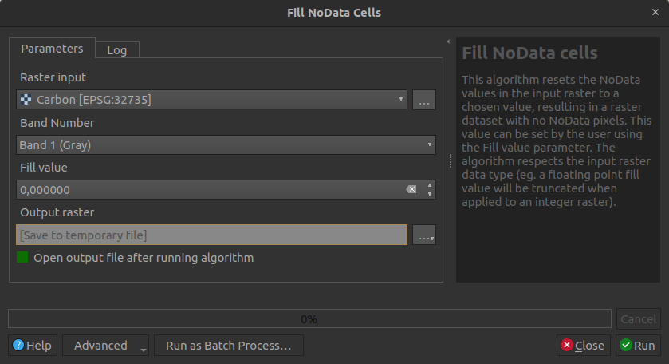
Figure 2: QGIS Fill nodata cells
- Click Run
Figure 3 shows a nodata filled raster.
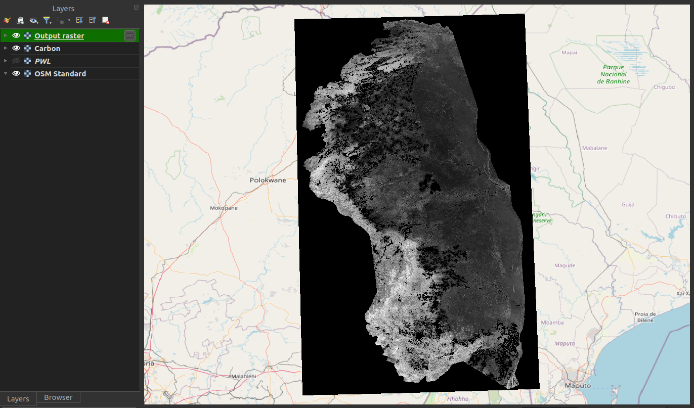
Figure 3: Raster with nodata pixels remove/filled
Coordinate systems
Fix layers with an undefined CRS
Sometimes a spatial dataset might not have its coordinate system defined. This can cause issues and needs to be resolved prior to perform analysis. An unknown coordinate system can be identified as follows:
- Open the layer in QGIS
- QGIS will show a warning next to the layer
- This warning will explain that the coordinate system is not defined
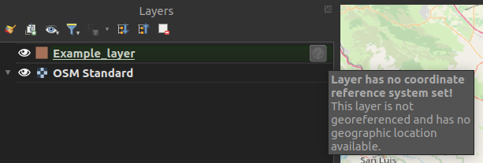
Figure 4: Unknown CRS for a layer in QGIS
- Further investigation can be done by right-clicking on the layer and select Properties
- Click on the Information tab
- Scroll down to Coordinate Reference System (CRS)
- Unknown will be shown if the CRS is not set
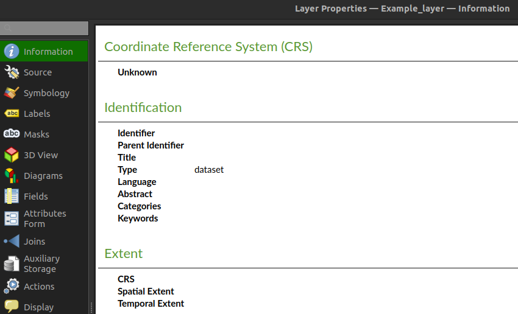
Figure 5: QGIS layer properties
To define the CRS, do the following:
- Type "assign projection" in the toolbox search
- Open the Assign Projection tool in the Raster Projections section
- If its a vector layer, open the Assign Projection tool in the Vector general section
- Set the parameters as follows:
- Input layer: Layer which has an undefined CRS
- Desired CRS: CRS which the layer coordinates is using
- Click Run
- Check if the layer is at its correct position in the QGIS canvas
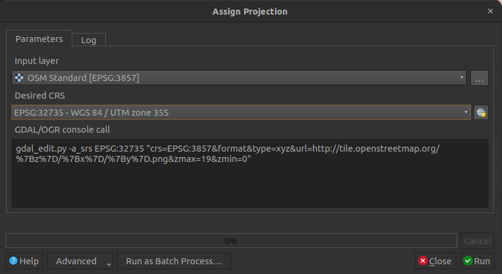
Figure 6: QGIS Assign projection tool
Be sure you are using the correct coordinate system when defining an unknown coordinate system to a layer. If the incorrect coordinate system is selected, the data will likely not be at the correct position spatially.
Reprojecting (Warping)
- Best will be to convert each dataset in a geographic coordinate system to a projected coordinate system
- Type warp in the QGIS toolbox search
- Under Raster projections, select Warp
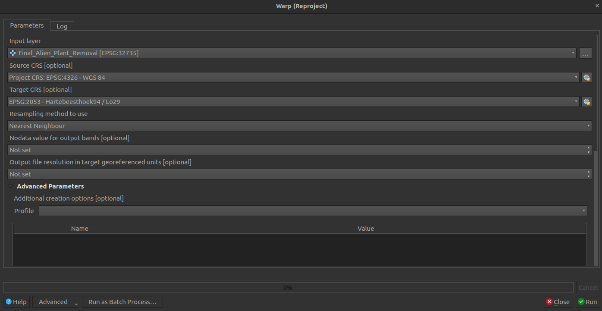
Figure 7: QGIS Warp tool
-
Provide the following parameters:
- Input layer: Layer thee user wants to reproject
- Source CRS: Current CRS of the layer
- Target CRS: The CRS to what the layer should be projected
- Resampling method to use: Nearest Neighbour. Using other options will change pixel values, which we don't want
- Nodata value: Leave empty, except if the user wants to change the nodata value
- Reprojected: The output file
-
Click Run
- Do this for all geographic coordinate system rasters
- As mentioned above, best will be for all layers to make use of the same coordinate system
Nodata value
If a nodata value for a raster is not set correctly, it will be considered as a pixel value which is part of the analysis. This can have a negative impact on the analysis results.
How to check if a raster's nodata is set correctly
- Right-click on the raster in QGIS
- Select Properties
- Select the Information tab
- Scroll down to the Bands section
- Under No-data there should be a value
- If there is no value, this means that the nodata is not set correctly and therefore needs to be fixed
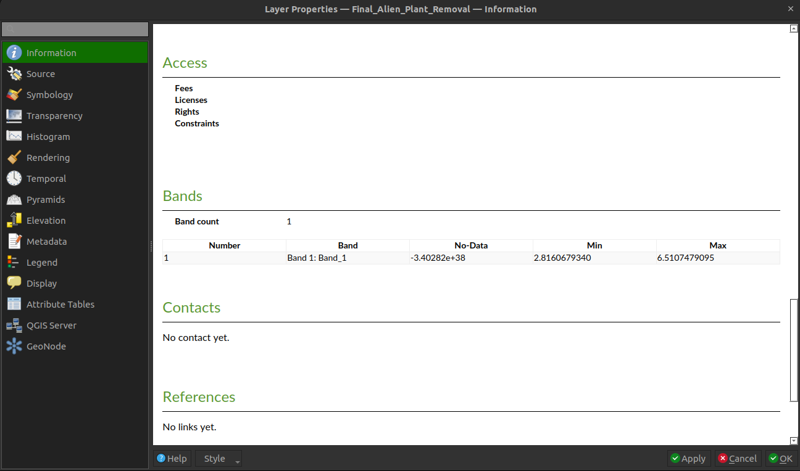
Figure 8: Layer properties to check for nodata value
To fix a nodata issue, do the following:
- Type Translate in the toolbox search
- Open the Translate tool under Raster Conversion
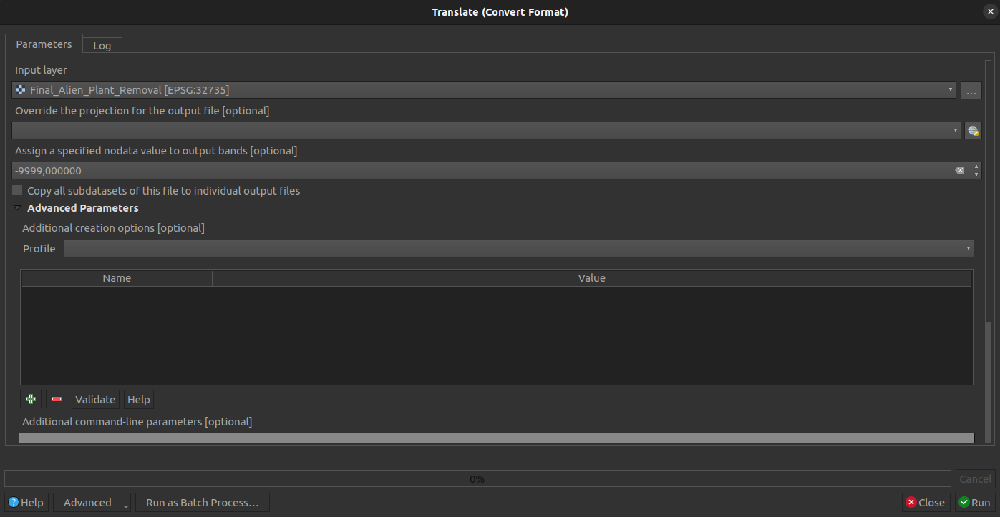
Figure 9: QGIS Translate tool
- Provide the following parameters:
- Input layer: Raster layer
- Assign a specific nodata value to output bands: Provide a desired value here. -9999 will suffice for most cases
- Converted: Output raster
This should solve a nodata issue with a raster. The Translate tool is to convert a raster to another format, but the user can still make use of the same format. This tool is useful to correctly set nodata values when needed.
Outlier pixels/values
A user must check if the raster data only include pixel values within the range it should be. If there are any pixels values outside the range of accepted values, those pixels needs to be removed. This can be accomplished using the Reclassify by table tool.
- Type reclassify by table in the QGIS toolbox search
- Select the Reclassify by table tool
- Set the parameters as follows:
- Raster layer: Layer to be reclassed
- Band number: Like the first band
- Reclassified raster: Output raster
- Reclassification table: Rules for the reclassification (explanation follows)

Figure 10: QGIS Reclassify by Table tool
- Open the Reclassification table so that the user can set the value reclassifcations. Atleast one row needs to be provided
- Click Add Row
- Provide a Minimum and Maximum value. Consider the following:
- Minimum must be less than maximum if providing a range
- If only a single value needs to be reclassified, set the Minimum and Maximum to the same value
- Set the new Value for each row:
- Value has to be numeric
- If a user wants to remove a pixel/value from the analysis, the value needs to be set to the nodata value of the raster (e.g. -9999). See the above section on the Nodata value on how to find the nodata value of a raster

Figure 11: Reclassify table
- Click Run
- An example of the resulting raster compared to the original raster is shown in Figure 12
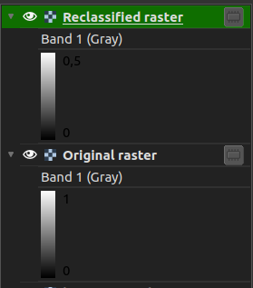
Figure 12: Reclassified raster compared to the original raster
Vector to raster
As mentioned above, the plugin can only work with raster layers. But often a user might have some data in vector format. This can easily be resolved by converting the vector layer to a raster, which can then be used as input to the plugin. Firstly, we want to convert the vector layer to make use of the same projected coordinate system than other data. This can be done as follows:
- Type 'Reproject layer' in the QGIS toolbox search
- Select the 'Reproject layer' tool in the 'Vector general' section
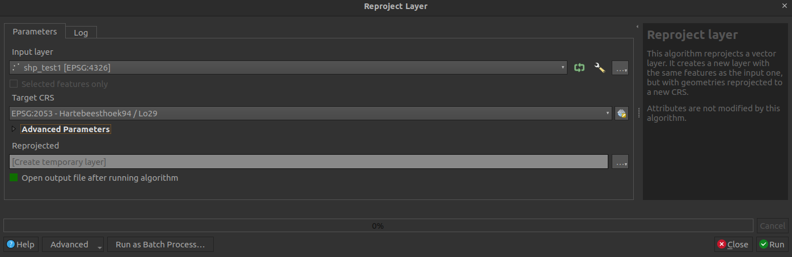
Figure 13: QGIS Reproject tool for vector layers
-
Set the parameters as follows:
- Input layer: Vector layer which needs to be reprojected
- Target CRS: Coordinate system to which the layer should be reprojected, preferrably a projected coordinate system
- Reprojected: The output layer
-
Click Run
Now that the vector layer is in the correct coordinate system, the user can convert the vector layer to a raster:
- Type 'rasterize' in the QGIS toolbox search
- Select 'Rasterize (vector to raster)'
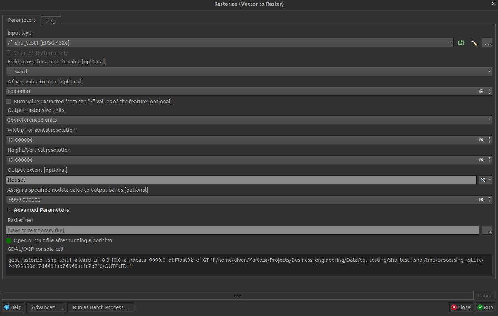
Figure 14: QGIS Rasterize tool
- Set the parameters as follows:
- Input layer: The vector layer to convert to a raster
- Field to use to burn: Attribute field to use as the raster pixel values
- A fixed value to burn: A default value for empty fields for a feature. Otherwise leave as is
- Output raster size units: Georeferenced units
- Width and Height: Spatial resolution in meters. If the vector layer is in geograpghic coordinates, this distance will be degrees not meters
- Output extent: Leave as is, except if the user wants to limit the output to an extent
- Assign a specific nodata value to output bands: -9999 will suffice for most cases
- Rasterized: The output raster
- Click Run
The user's data should now be ready for analysis.
CPLUS settings
The user can follow two approaches to open the CPLUS settings.
QGIS options (Figure 15):
- Click on Settings -> Options

Figure 15: QGIS settings
- Select the CPLUS tab to the left
- This will open the CPLUS settings dialog. See Figure 16 for an example
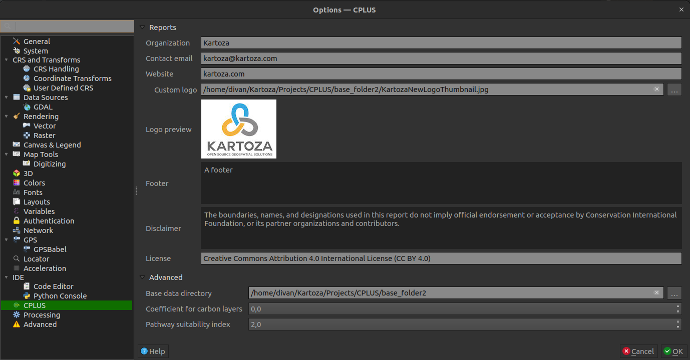
Figure 16: CPLUS section as loaded in the QGIS settings dialog
CPLUS toolbar (Figure 17): - Click on the CPLUS toolbar drop-down - Select Settings - This will take you directly to the CPLUS settings dialog in the QGIS options

Figure 17: CPLUS toolbar button
A short description of each available setting a user can change. Most are optional, but the user needs to set the base directory as its a requirement for the processing to work (e.g. outputs are stored in the base directory). Another important option to consider is snapping, as it will improve analysis results.
Configure Analysis:
- Settings will be added as the plugin development continues
Reports:
- Information which will be included when a report is generated. These settings are optional, and will be excluded from the report if not provided
- Organization: The organization(s) to be included in the report
- Contact Email: Contact email for the author
- Website: A website link to the project or company
- Custom logo: Enable and provide a custom logo of your choosing. If disabled, the CI logo will be used in the report
- Footer: Footer section for the report
- Disclaimer: A disclaimer to be added to the report
- License: A license to be added to the report
Advanced:
- Base data directory (required): Data accessed and download by the plugin will be stored here
- Coefficient for carbon layers: Value applied during processing to the carbon-based layers. Default is 0
- Pathway suitability index: Index multiplied to the pathways. Lower values means the pathway is less important, higher means its more important
- Snapping: Will set rasters to match the cell alignment of a reference layer
- Resample method: Resampling performed on pixel values
- Reference layer: The reference layer to which the cell alignment will be applied
- Rescale values: Rescale values according to cell size
Figure 18 shows an example of updating and applying CPLUS settings.
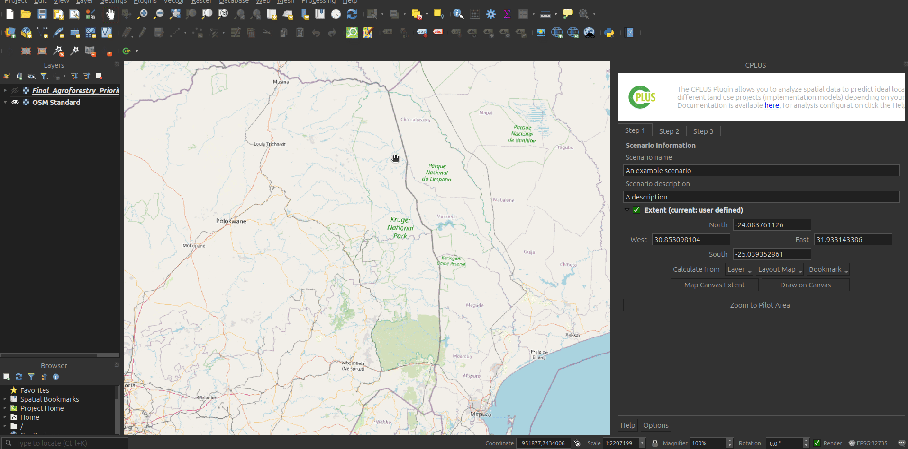
Figure 18: CPLUS settings example
Perform analysis
Figure 19 shows the toolbar button/menu for the plugin. Clicking on the icon will open the plugin. When a user clicks on the drop-down button, they will be presented with four options:
- CPLUS: Close or open the plugin dock widget
- Settings: Open the settings for the plugin
- Help: Takes the user to the online guide for the plugin
- About: Will take the user to the About section on the GH pages

Figure 19: CPLUS toolbar icon
Open the CPLUS dockwidget by clicking on the CPLUS toolbar icon (Figure 19).
Step 1: Scenario Information
The first step focuses on the Scenario Information. A Scenario refers to an overall analysis done in an area of interest (AOI). Different criteria and priorities for spatial decision-making and comparison will be considered for each scenario.
- Scenario name: A name for the analysis to be performed
- Scenario description: A detailed description of the analysis
- Extent: The area of interest for this analysis. This can be calculated from the current canvas view extent, a layer, or an extent drawn by the user
- Figure 20 shows an example of Step 1
- Once the information has been provided, click Step 2
If the QGIS canvas CRS is not set to WGS84 (EPSG: 4326), the zoom to pilot area will not happen.

Figure 20: Step 1 focuses on Scenario Information
Pilot area
The pilot study area covers Bushback Ridge, South Africa. When a user's study area is outside of this region, some of the Implementation models and Priority weighted layers will be disabled. This is because those datasets are specific to the Bushback Ridge study area and are of no use for other AOIs. It's important for a user to take this into account, as step 2 and step 3 will be affected by this.
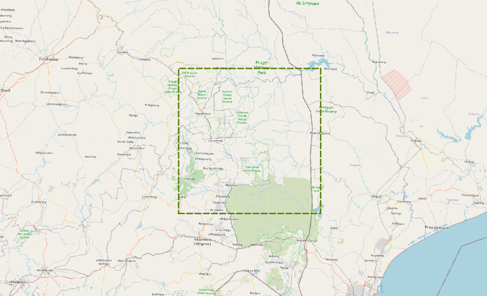
If the selected extent is outside of this region, the Bushback Ridge Implementation models will be disabled.
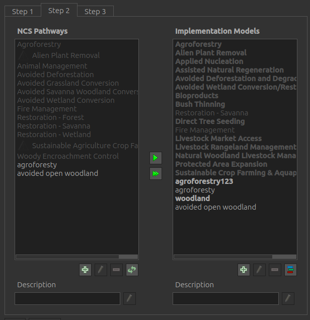
The same goes for the Priority Weighted layers.
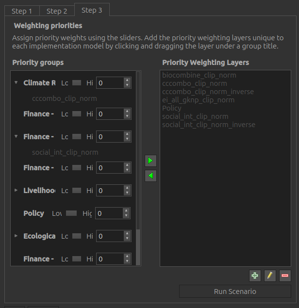
If a user is outside the Bushback Ridge region, they will need to create custom IMs and/or PWLs. Explanation on these follows in the following sections.
Step 2: Pathways and models
This step deals with the Natural Climate Solution (NCS) pathways and the Implementation models (IM). A NCS pathway can be defined as a composite spatial layer on specific land use classes and other factors that determine areas ideal for a specific use case (e.g. Animal mangement). An IM is a combination of NCS pathways represented in an AOI spatial layer. Figure 21 shows the UI.

Figure 22: Step 2 allows the user to create and edit NCS pathways and Implementation Models
Step 2 buttons (Figure 18):
- Add: Adds a new pathway or model
- Delete: Delete a pathway or model
- Editing: Edit and existing pathway or model
- Refresh view: Checks the base directory for data
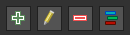
Figure 23: Create, delete, and edit buttons
NCS Pathway
- Click on the left green plus button to add a new pathway (Figure 24)
- Provide a Name and Description for the pathway
- Two approaches to select a layer: A layer from the QGIS canvas, or Upload from a file
- Add Carbon layers as desired. Multiple carbon layers can be provided. These layers will be averaged
- Click OK
- The new NCS pathway will be added
If the NCS pathway is broken (e.g. layer or file cannot be found), the pathway text will have an exclamation mark next to it. The user will need to rectify the issue before continuing to step 3.
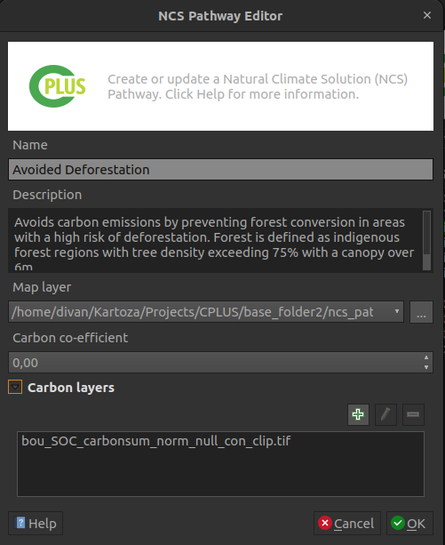
Figure 24: NCS Pathway creator/editor
Be sure each NCS pathway's Carbon layers is set up correctly before setting up the Implementation models in the steps which follows. Changes to the Carbon layers afterward will require the user to set up the Implementation model again.
Implementation model
Add pathways to an existing IM:
- Select the IM to which a pathway should be added
- Select the pathway you want to add to the IM
- Click the right arrow
 to add a pathway to the selected IM
to add a pathway to the selected IM - Click the double right arrow
 to add all pathways to the IM
to add all pathways to the IM - The user can also drag-and-drop a pathway onto the desired IM
How to add a new IM:
- Click on the right green plus button to add an Implementation model (Figure 25)
- Provide a Name and Description
- (optional) The user can provide an existing raster for the IM. Enable Map layer to do this
- Click OK
- The new Implementation model will be added

Figure 25: Implementation Model creator/editor
- Open the Style pixel value editor by clicking on the
 button
button - Select the IM which needs to be moved up or down in the stack
- Drag-and-drop the IM where it needs to be in the stack
- Click OK once done
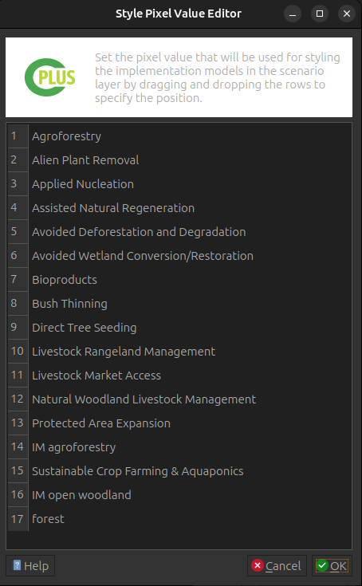
- The final step is to select each of the IMs a user want to include in the scenario run
- A user can exclude IMs if they don't want to include it, even if the IM has pathways

Figure 26: Selected Implementation models
Before proceeding to Step 3, a user needs to define at least one NCS pathway layer for an implementation model, otherwise a warning message will be displayed.
Step 3: Priority weighting
The final step deals with the Weighting priorities and Priority groups. These weights will be applied when the user starts running the scenario. An example is shown in Figure 27.
- Weight values ranges from 0 to 5, and affects how important a PWL is compared to other layers
- A value of 0 indicates that the PWL has a lower importance
- A value of 5 means that the PWL has a higher importance
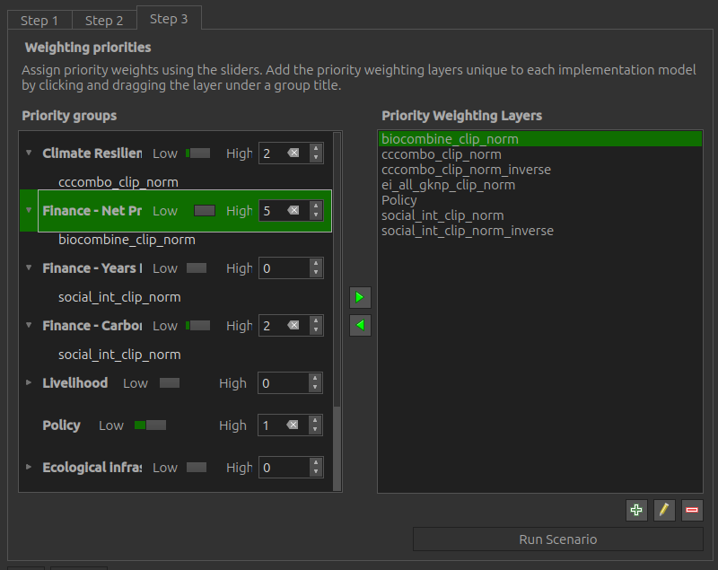
Figure 27: Step 3 allows the user to set the Weights of each Priority Group
The priority weighting layers can be selected and added and removed into each priority group by using the arrow buttons.
Add priority layers
Select the target layer from the priority weighting layers list and the destination group from
the priority groups and use the left arrow button  to add the layer into the group.
to add the layer into the group.
Remove priority layers
Select the target layer from the priority weighting layers list from its priority group and
use the right arrow button  to remove the layer into the group.
to remove the layer into the group.
Create custom priority layers
- Click on
 to add a new custom priority layer, or
to add a new custom priority layer, or  to edit an existing priority layer
to edit an existing priority layer - This will open the Priority Layer dialog (see Figure 23)
- The following parameters needs to be set:
- Priority layer: The layer which represents the priority layer
- Priority layer name: A unique identifier for the priority layer
- Priority layer description: A detailed description of the priority layer
- Click the Assign implementation models button to select IMs to be associated with the priority layer (see Figure 28)
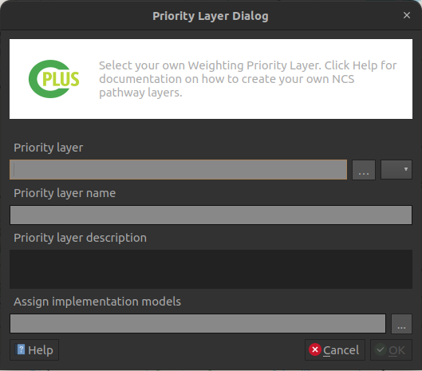
Figure 28: Priority layer dialog
- Select the IMs you want to be associated with the priority layer
- Click OK

Figure 29: Implementation model selection for priority layers
 : Remove the selected PWL
: Remove the selected PWL
Setting groups values
Move the slider to adjust the weight of each group, values can also be set manually, by using the left input spin box. Once done selecting weights, click Run Scenario button to run the analysis.
Steps 1 to 3 example
The following recording (Figure 25) shows an example on how to do Step 1, 2 and 3. This is based on the pilot study area.
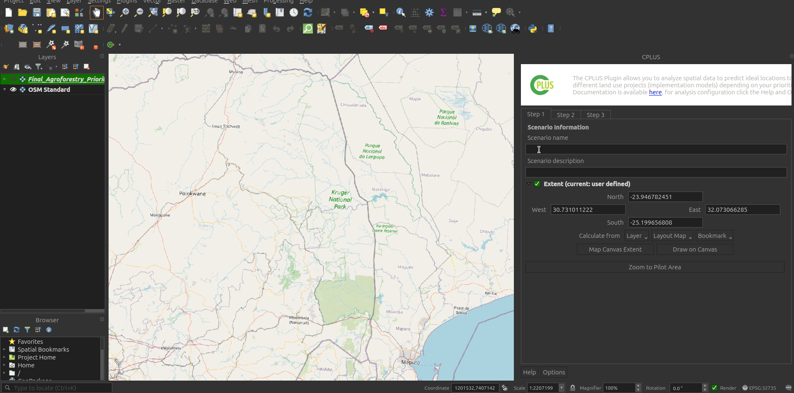
Figure 30: Shows how to implement Step 1, 2 and 3 in QGIS
Processing
- Once the user has provided all desired parameters, click Run Scenario
- The processing dialog will open (Figure 31)
- The processing will take a while, depending on the number of IMs and pathways provided for each IM
- Click the Cancel button to stop the processing
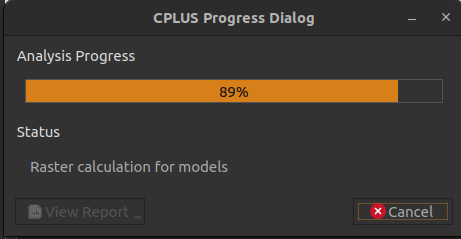
Figure 31: Processing dialog while the algorithm is running
- Figure 32 will be the result if the processing succceeded
- The user should take note that the View Report button is now available

Figure 32: Processing dialog if successfull
Processing results
The following groups and layers will be added to the QGIS canvas once the processing finishes (see Figure 33): - A group containing the Scenario results - Implementation Model Maps: Non-weighted IMs created by the user in Step 2 - Weighted Implementation Model Maps: Weighted IMs based on the IMs added in Step 2 and weighing set in Step 3 - NCS Pathways Maps: Pathways used for each IM in Step 2. If a IM layer were provided as the IM in Step 2, this will contain no pathways
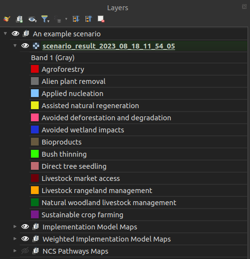
Figure 33: Groups and layers added to the QGIS canvas
An example of output results in QGIS is detailed by Figure 33

Figure 34: A recording example of an example scenario
Report generating
- Click the View Report button
- The user will have the following options:
- Layout designer: Opens the report in the QGIS layout designer
- Open PDF: Opens the report in PDF format
- Help: Open the help documentation related to the reports
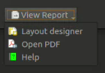
Figure 35: Report options
- Figure 35 shows an example of a report opened in the layout designer

Figure 36: Report opened in the QGIS layout designer
- Figure 36 shows a report in PDF format

Figure 37: PDF version of a report
Generated report example
Here is an example on how to open a report in the QGIS layout designer, or as a PDF (Figure 33).

Figure 38: Example of a generated report in PDF and layout designer formats